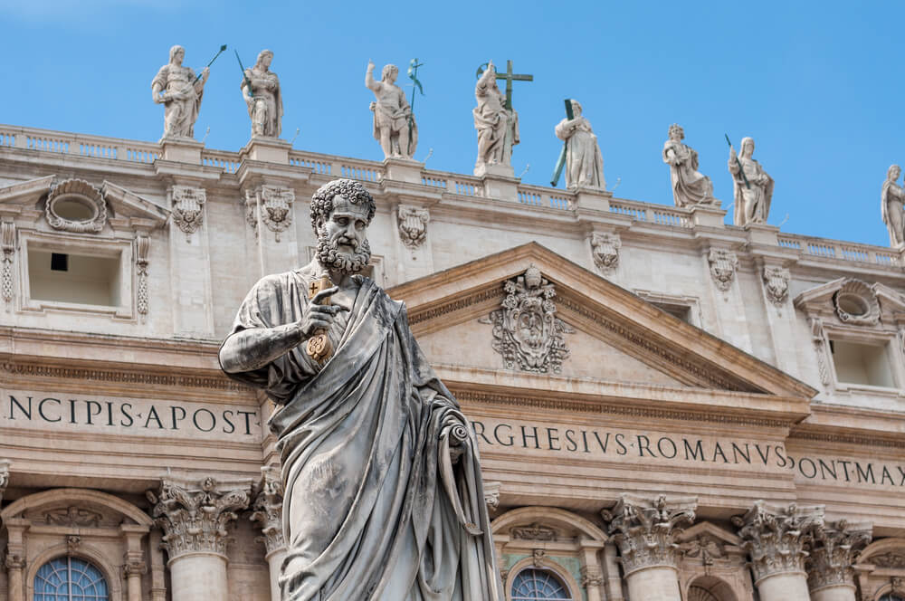

Rome, Italy
Due to its position, Rome is frequently referred to as the "Eternal City" and the "City of Seven Hills." The "cradle of Western civilization and Christian culture," as well as the seat of the Catholic Church, is commonly regarded as Rome. Rome is a city that has captured the imagination of people for centuries, and for good reason. Its rich history and cultural heritage have left a lasting impression on the world, and the city continues to be a major destination for tourists from all over the globe. One of the reasons why Rome is so unique is its location. Built on seven hills overlooking the Tiber River, Rome is a city of contrasts and contradictions, where ancient ruins stand alongside modern skyscrapers, and where the past and present are constantly intertwined. One of the most fascinating things about Rome is its role in shaping Western civilization and Christian culture. The city is home to some of the world's most iconic landmarks, such as the Colosseum, the Pantheon, and the Roman Forum, all of which offer a glimpse into the city's glorious past. The Vatican City, located within Rome, is also a major draw for visitors. It is the smallest independent state in the world and the spiritual home of the Catholic Church, attracting millions of pilgrims and tourists every year.
Rome is known to be a historic place. Rome is another art filled place. That is mainly why I want to visit the place. It has lots of Museums, Good food and just beautiful archeology. I do not consider myself as very religious but I would want to visit the amazingly structured churches in Rome. Also, You can find the central Trevi Fountain. Very well known attraction alongside The Colloseum. In addition to its rich history and art-filled museums, Rome is also known for its stunning architecture and beautiful cityscape. As you stroll through the city, you will be captivated by the ancient ruins and towering structures that dominate the skyline. The iconic Colosseum, the largest amphitheater ever built, is a must-see attraction that draws millions of visitors each year. Another popular destination is the Vatican City, the smallest country in the world, which houses many of Rome's most famous churches and museums, including the Sistine Chapel with its stunning ceiling painted by Michelangelo. Additionally, Rome's food scene is second to none, offering a wide variety of delicious Italian dishes and world-renowned wines.
Go back